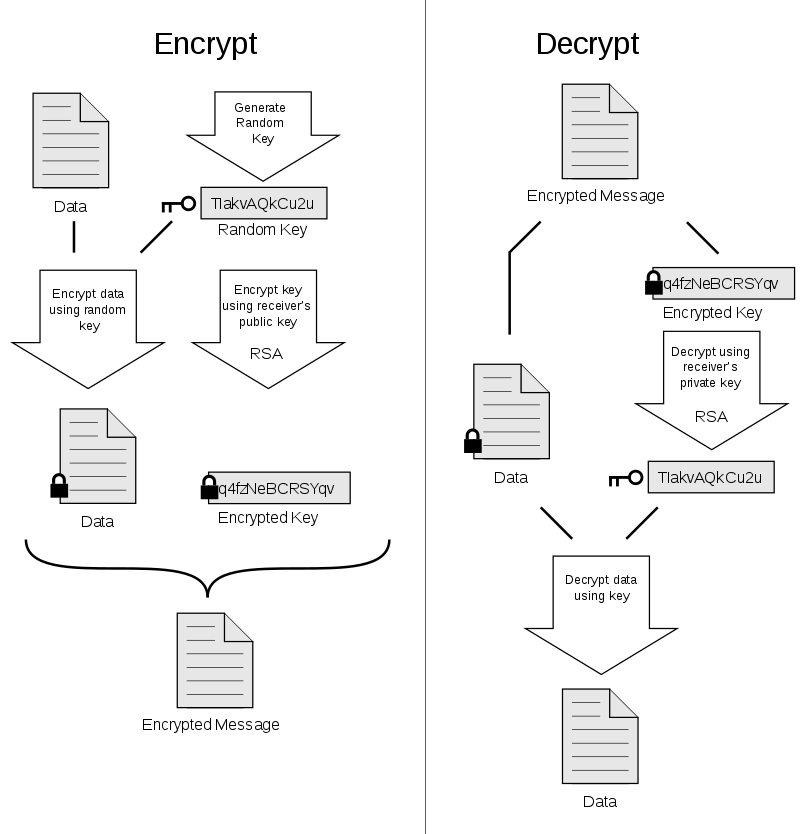
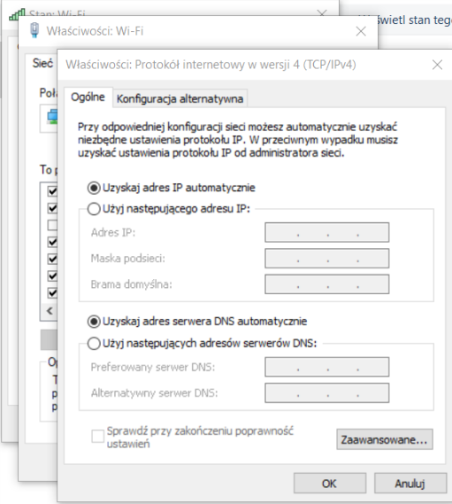
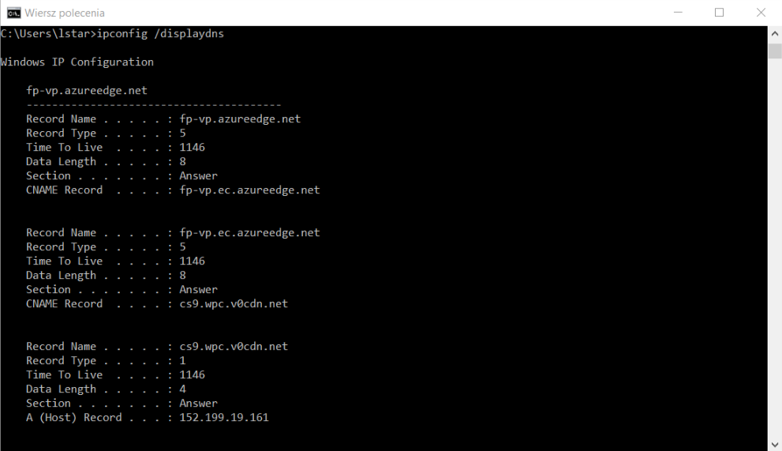
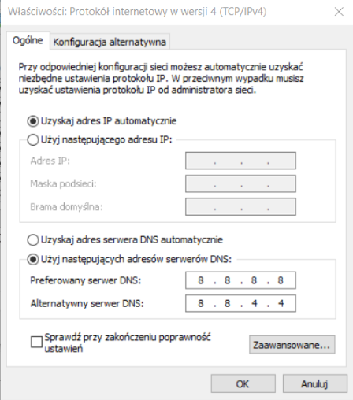
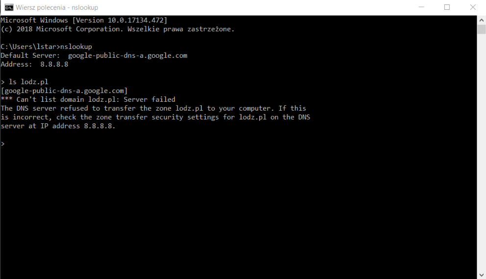
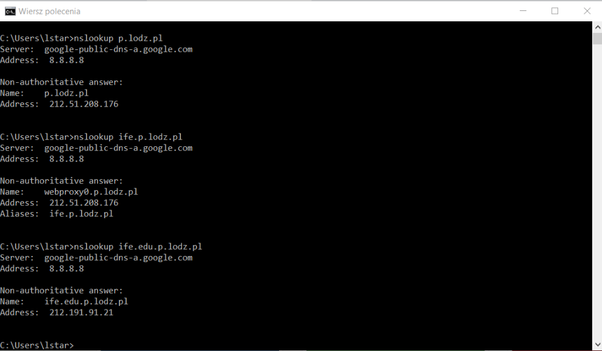
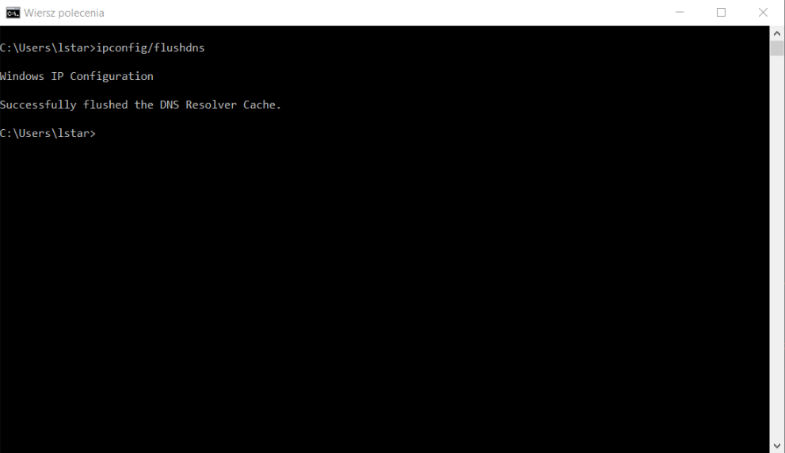
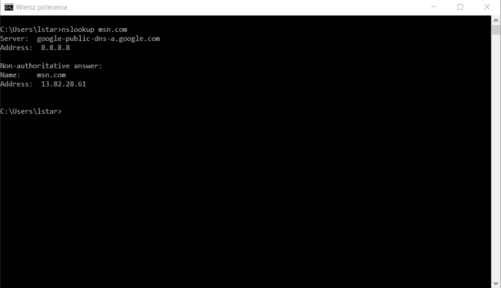

The Domain Name System (DNS) is a hierarchical decentralized naming system for computers, services, or
other resources connected to the Internet or a private network. It associates various information with
domain names assigned to each of the participating entities. Most prominently, it translates more
readily memorized domain names to the numerical IP addresses needed for locating and identifying
computer services and devices with the underlying network protocols.
Top level domains
Types of top-level domains:
Infrastructure top-level domain (ARPA): This group consists of one domain, the Address and
Routing Parameter Area.
Generic top-level domains (gTLD): Top-level domains with three or more characters
Restricted generic top-level domains (grTLD): These domains are managed under official ICANN
accredited registrars.
Sponsored top-level domains (sTLD): These domains are proposed and sponsored by private
agencies or organizations that establish and enforce rules restricting the eligibility to use the
TLD. Use is based on community theme concepts; these domains are managed under official ICANN
accredited registrars.
Country-code top-level domains (ccTLD): Two-letter domains established for countries or
territories. With some historical exceptions, the code for any territory is the same as its
two-letter ISO 3166 code.
Internationalized country code top-level domains (IDN ccTLD): ccTLDs in non-Latin
character sets (e.g., Arabic, Cyrillic, Hebrew, or Chinese).
Test top-level domains (tTLD): These domains were installed under .test for testing purposes
in the IDN development process; these domains are not present in the root zone.
Examples of top-level domains:
.com - an open TLD. Any person or entity is permitted to register.
,org - an open TLD. Any person or entity is permitted to register.
.net - an open TLD. Any person or entity is permitted to register.
int - strictly limited to organizations, offices, and programs endorsed by a treaty between
two or more nations.
.edu - limited to specific higher educational institutions such as, but not limited to, trade
schools and universities.
.gov - limited to United States governmental entities and agencies as well as qualifying
state, county and local municipal government agencies.
.mil - limited to use by the United States military.
DNS Hierarchy
Domain Names are hierarchical and each part of a domain name is referred to as either the root, top
level, second level or as a sub-domain. To allow computers to properly recognize a fully qualified
domain name, dots are placed between each part of the name. All resolvers treat dots as separators
between the parts of the domain name. The fully qualified domain name is split into pieces at the dots
and the tree is searched starting from the root of the hierarchichal tree structure. All resolvers start
their lookups at the root, therefore the root is represented by a dot and is often assumed to be there,
even when not shown. The resolver navigates it's way down the tree until it gets to the last, left-most
part of the domain name and then looks within that location for the information it needs. Information
about a host such as its name, its IP address and occasionally even it's function are stored in one or
more zone files which together compose a larger zone often referred to as a domain.
Within the hierarchy, you will start resolution at the top level domain, work your way down to the
second-level domain, then through zero, one or more sub-domains until you get to the actual host name
you want to resolve into an IP address.
DNS Queries
There are three types of queries in the DNS system:
Recursive Query
In a recursive query, a DNS client provides a hostname, and the DNS Resolver “must” provide an
answer—it responds with either a relevant resource record, or an error message if it can't be
found. The resolver starts a recursive query process, starting from the DNS Root Server, until
it finds the Authoritative Name Server (for more on Authoritative Name Servers see DNS Server
Types below) that holds the IP address and other information for the requested hostname.
Iterative Query
In an iterative query, a DNS client provides a hostname, and the DNS Resolver returns the best
answer it can. If the DNS resolver has the relevant DNS records in its cache, it returns them.
If not, it refers the DNS client to the Root Server, or another Authoritative Name Server which
is nearest to the required DNS zone. The DNS client must then repeat the query directly against
the DNS server it was referred to.
Non-Recursive Query
A non-recursive query is a query in which the DNS Resolver already knows the answer. It either
immediately returns a DNS record because it already stores it in local cache, or queries a DNS
Name Server which is authoritative for the record, meaning it definitely holds the correct IP
for that hostname. In both cases, there is no need for additional rounds of queries (like in
recursive or iterative queries). Rather, a response is immediately returned to the client.
DNS Delegation
The DNS gives you the option to separate the namespace into different DNS zones. You can seve them, copy
them or distribute it to other DNS servers. There are few reasons to do it:
You would like to load balance by dividing one large zone into more, smaller zones. This will
increase the DNS resolution and add extra security.
You desire to delegate management of part of your DNS namespace to another location or department in
your organization.
Use the DNS Delegation for adding various subdomains. Use them for different purposes.
Delegate control of part of your DNS namespace to another location.
You can restructure your namespace and make other DNS servers responsible for a part of the whole
information.
When you create new DNS zone, you must have delegation records in other zones that point toward the
authoritative DNS servers for the new one.
The resource record information of the new DNS zone will be stored in a DNS server, which will be the
primary master for that zone. You can improve the security and duplicate the zone information to another
DNS server, later on.
DNS Record
The Domain Name System specifies a set of various types of resource records (RRs), which are the basic
information elements of the domain name system. Each record has a type (name and number), an expiration
time (time to live), a class, and type-specific data. Resource records of the same type are described as
a resource record set (RRset). The order of resource records in a set, which is returned by a resolver
to an application, is undefined, but often servers implement round-robin ordering to achieve load
balancing. The Domain Name System Security Extensions (DNSSEC), however, work on the complete set of
resource record in canonical order.
Resource record fields:
NAME - Name of the node to which this record pertains. It's length is variable.
TYPE - Type of RR in numeric form. It lenght is 2 octets.
CLASS - Class code. It's legth is 2 octets.
TTL - Count of seconds that the RR stays valid. It's value is 4 octets.
RDLENGHT - Length of RDATA field (specified in octets). Its length is 2.
RDATA - Additional PR-specific data. It's is RDLENGHT.
DNS Record Types:
Address Mapping record (A Record) - also known as a DNS host record, stores a hostname and
its corresponding IPv4 address.
IP Version 6 Address record (AAAA Record) - stores a hostname and its corresponding IPv6
address.
Canonical Name record (CNAME Record) - can be used to alias a hostname to another hostname.
When a DNS client requests a record that contains a CNAME, which points to another hostname, the DNS
resolution process is repeated with the new hostname.
Mail exchanger record (MX Record) - specifies an SMTP email server for the domain, used to
route outgoing emails to an email server.
Name Server records (NS Record) - specifies that a DNS Zone, such as “example.com” is
delegated to a specific Authoritative Name Server, and provides the address of the name server.
Reverse-lookup Pointer records (PTR Record) - allows a DNS resolver to provide an IP address
and receive a hostname (reverse DNS lookup).
Certificate record (CERT Record) - stores encryption certificates—PKIX, SPKI, PGP, and so on.
Service Location (SRV Record) - a service location record, like MX but for other
communication protocols.
Text Record (TXT Record) - typically carries machine-readable data such as opportunistic
encryption, sender policy framework, DKIM, DMARC, etc.
Start of Authority (SOA Record) - this record appears at the beginning of a DNS zone file,
and indicates the Authoritative Name Server for the current DNS zone, contact details for the domain
administrator, domain serial number, and information on how frequently DNS information for this zone
should be refreshed.
Reverse DNS
In computer networks, a reverse DNS lookup or reverse DNS resolution (rDNS) is the querying of the
Domain Name System (DNS) to determine the domain name associated with an IP address. he process of
reverse resolving an IP address uses PTR records. The reverse DNS database of the Internet is rooted in
the arpa top-level domain.
Although the informational RFC 1912[1] (Section 2.1) recommends that "every Internet-reachable host
should have a name" and that "for every IP address, there should be a matching PTR record," it is not an
Internet Standard requirement, and not all IP addresses have a reverse entry.
Non-authoritative Answer
Non-authoritative name servers do not contain original source files of domain’s zone. They have a cache
file for the domains that is constructed from all the DNS lookups done previously. If a DNS server
responded for a DNS query, which doesn’t have original file, is known as a Non-authoritative answer.
Authoritative Answer
An authoritative name server is a name server that has the original source files of a domain zone files.
The is where domain administrator has configured the DNS records for a domain. Authoritative DNS server
can be master DNS server or its slaves. If you directly query to these DNS servers, they will return
authoritative answer because they have the original files of domain zone.
DNS Resolver
Domain name resolvers determine the domain name servers responsible for the domain name in question by a
sequence of queries starting with the right-most (top-level) domain label. DNS resolvers are classified
by a variety of query methods, such as recursive, non-recursive, and iterative.
non-recursive query - resolver queries a DNS server that provides a record either for which
the server is authoritative, or it provides a partial result without querying other servers. In case
of a caching DNS resolver, the non-recursive query of its local DNS cache delivers a result and
reduces the load on upstream DNS servers by caching DNS request records for a period of time after
an initial response from upstream DNS servers.
recursiver query - resolver queries a single DNS server, which may in turn query other DNS
servers on behalf of the requester. For example, a simple stub resolver running on a home router
typically makes a recursive query to the DNS server run by the user's ISP. A recursive query is one
for which the DNS server answers the query completely by querying other name servers as needed. In
typical operation, a client issues a recursive query to a caching recursive DNS server, which
subsequently issues non-recursive queries to determine the answer and send a single answer back to
the client. The resolver, or another DNS server acting recursively on behalf of the resolver,
negotiates use of recursive service using bits in the query headers. DNS servers are not required to
support recursive queries.
iterative query - resolver queries a chain of one or more DNS servers. Each server refers the
client to the next server in the chain, until the current server can fully resolve the request. For
example, a possible resolution of www.example.com would query a global root server, then a "com"
server, and finally an "example.com" server.
DNS Caching
To improve efficiency, reduce DNS traffic across the Internet, and increase performance in end-user
applications, the Domain Name System supports DNS cache servers which store DNS query results for a
period of time determined in the configuration (time-to-live) of the domain name record in question.
Typically, such caching DNS servers also implement the recursive algorithm necessary to resolve a given
name starting with the DNS root through to the authoritative name servers of the queried domain. With
this function implemented in the name server, user applications gain efficiency in design and operation.
file: /etc/hosts
Modifying your hosts file enables you to override the domain name system (DNS) for a domain on a
specific machine. DNS management is useful when you want to test your site without the test link prior
to going live with SSL, verify that an alias site works prior to DNS changes, and for other DNS-related
reasons.
This file contains the mappings of IP addresses to host names. Each entry should be kept on an
individual line. The IP address should be placed in the first column followed by the corresponding host
name. The IP address and the host name should be separated by at least one space.
For example:
102.54.94.97 rhino.acme.com # source server
38.25.63.10 x.acme.com # x client host
Mail system
Protocols:
Post Office Protocol 3 (POP3) - a mail access protocol used by a client application to read
messages from the mail server. Received messages are often deleted from the server. POP supports
simple download-and-delete requirements for access to remote mailboxes (termed maildrop in the POP
RFC's).
Internet Message Access Protocol (IMAP) - provides features to manage a mailbox from multiple
devices. Small portable devices like smartphones are increasingly used to check email while
travelling, and to make brief replies, larger devices with better keyboard access being used to
reply at greater length. IMAP shows the headers of messages, the sender and the subject and the
device needs to request to download specific messages. Usually mail is left in folders in the mail
server.
Messaging Application Programming Interface (MAPI) - used by Microsoft Outlook to communicate
to Microsoft Exchange Server - and to a range of other email server products such as Axigen Mail
Server, Kerio Connect, Scalix, Zimbra, HP OpenMail, IBM Lotus Notes, Zarafa, and Bynari where
vendors have added MAPI support to allow their products to be accessed directly via Outlook.
Simple Mail Transfer Protocol (SMTP) - an Internet standard for email transmission. First
defined by RFC 821 in 1982, it was updated in 2008 with Extended SMTP additions by RFC 5321; which
is the protocol in widespread use today. Mail servers and other mail transfer agents use SMTP to
send and receive mail messages on TCP port 25. Although proprietary systems such as Microsoft
Exchange and IBM Notes and webmail systems such as Outlook.com, Gmail and Yahoo! Mail may use their
own non-standard protocols internally, all use SMTP when sending or receiving email from outside
their own systems.
Basic commands
Invoking Mail To Send Messages
To invoke the UNIX mail utility program to send messages, type
mailx email-names
or
mailx -s subject email-names
where email-names is a list of electronic mail names of people to whom you wish to send the message and
subject is the subject (or title) of the message being sent. The email name may be as simple as name or
name@machine or may require the name followed by a fully qualified host/domain name (e.g.
name@CS.ColoState.Edu). If the mailx command does not prompt you for a subject (which is nice to include
for the receiver of the mail), it can be included with the -s option.
Tilde escapes are entered at the start of a text line (when entering mail message text) to perform some
useful operations. Hit the Return key after entering a tilde escape sequence/command.
~?
to list all tilde (~ ) escapes (i.e. a help display)
~p
to list the text of the message typed in so far
~s subj
to set or change the current subject field to subj
~t enams
to add the enams list of email names to the current list of
email-names
~h
to list and to modify the subject and/or the email-names list
~! cmd
to execute the UNIX command cmd from within mailx utility
~r fname
to read the file fname into the message at current position
~v
to invoke the vi editor on the message text to edit it
~q
to exit mailx, and to save the current message in the file named
dead.letter in your home directory
Invoking Mail to Receive Messages
To invoke the UNIX mail utility program to receive messages, type
mailx
A response "No mail for user_name" means there are no new or old saved mail messages. Entering the
utility means you have mail (when you log in the system informs you if you have mail).
The following commands may be used within mailx:
h
to list the headers of the mail messages in your mailbox
<Return>
to continue the current or display (print) the next mail message in your mailbox
+orn
to display (print) the next mail message in your mailbox
-orz
to display (print) the previous mail message in your mailbox
#
to display (print) the message numbered # in your mailbox
t MSGS
to display (print) the messages indicated by the message range MSGS
d MSGS
to delete the messages indicated by the message range MSGS
s MSGS fname
to saved the messages indicated by the message range MSGS to the file
named fname
R msg
to reply (and send mail) to the authors of the message msg
r msg
to reply (and send mail) to all the recipients of the message msg
m name
to send mail message to person named name and enter current message text
top MSGS
to list the top 5 lines of each message indicated by the message range
MSGS
q
to quit and preserve all unread messages in your mailbox
x
to quit and preserve all messages in your mailbox
Network News Transfer Protocol
The Network News Transfer Protocol (NNTP) is an application protocol used for transporting Usenet news
articles (netnews) between news servers and for reading and posting articles by end user client
applications.
Mailbox
An email box (also email mailbox, e-mailbox) is the destination to which electronic mail messages are
delivered. It is the equivalent of a letter box in the postal system.
Aliases
Aliases are additional names of mailboxes. You can use them to assign multiple addresses to a single
mailbox. For example, you can add the advertising@ alias for an employee who manages advertising. After
this, emails sent to the addresses advertising@yourdomain.com will be delivered to this employee's
mailbox.
Address
An email address identifies an email box to which email messages are delivered. An email address such as
John.Smith@example.com is made up of a local-part, an @ symbol, then a case-insensitive domain. Although
the standard requires[1] the local part to be case-sensitive, it also urges that receiving hosts deliver
messages in a case-independent fashion,[2] e.g., that the mail system at example.com treat John.Smith as
equivalent to john.smith; some mail systems even treat them as equivalent to johnsmith.[3] Mail systems
often limit their users' choice of name to a subset of the technically valid characters, and in some
cases also limit which addresses it is possible to send mail to.
E-mail structure
Message header
Each message has exactly one header (the "header section" of the message, according to the
specification), which is structured into fields ("header fields"). Each field has a name ("field name"
or "header field name") and a value ("field body" or "header field body").
nformally, each line of text in the header that begins with a non-whitespace printable character begins
a separate field. The field name starts in the first character of the line and ends before the
separator character ":". The separator is then followed by the field value (the "body" of the
field). The value is continued onto subsequent lines if those lines have a space or tab as their first
character.
The message header must include at least the following fields:
From: The email address, and optionally the name of the author(s). In many email clients not
changeable except through changing account settings.
Date: The local time and date when the message was written. Like the From: field, many email
clients fill this in automatically when sending. The recipient's client may then display the time in
the format and time zone local to them.
Common header fields for email include:
To: The email address(es), and optionally name(s) of the message's recipient(s). Indicates
primary recipients (multiple allowed), for secondary recipients see Cc: and Bcc: below.
Subject: A brief summary of the topic of the message. Certain abbreviations are commonly used
in the subject, including "RE:" and "FW:".
Cc: Carbon coply: Many email clients will mark email in one's inbox differently depending on
whether they are in the To: or Cc: list. (Bcc: Blind carbon copy; addresses are usually only
specified during SMTP delivery, and not usually listed in the message header.)
Content-Type: Information about how the message is to be displayed, usually a MIME type.
Precedence: commonly with values "bulk", "junk", or "list"; used to indicate that automated
"vacation" or "out of office" responses should not be returned for this mail, e.g. to prevent
vacation notices from being sent to all other subscribers of a mailing list. Sendmail uses this
field to affect prioritization of queued email, with "Precedence: special-delivery" messages
delivered sooner.
Message-ID: Also an automatically generated field; used to prevent multiple delivery and for
reference in In-Reply-To: (see below).
In-Reply-To: Message-ID of the message that this is a reply to. Used to link related messages
together. This field only applies for reply messages.
References: Message-ID of the message that this is a reply to, and the message-id of the
message the previous reply was a reply to, etc.
Reply-To: Address that should be used to reply to the message.
Sender: Address of the actual sender acting on behalf of the author listed in the From: field
(secretary, list manager, etc.).
Archived-At: A direct link to the archived form of an individual email message.
Attachment
An email attachment is a computer file sent along with an email message. One or more files can be
attached to any email message, and be sent along with it to the recipient. This is typically used as a
simple method to share documents and images. A paper clip icon is the standard indicator for an
attachment in an email client.
Email standards such as MIME don't specify any file size limits, but in practice email users will find
that they can't successfully send very large files across the Internet. This is because of a number of
potential limits:
Mail systems often arbitrarily limit the size their users are allowed to submit.
A message will often pass through several mail transfer agents to reach the recipient. Each of these
has to store the message before forwarding it on, and may therefore also impose size limits.
The recipient mail system may reject incoming emails with attachments over a certain size.
The result is that while large attachments may succeed internally within a company or organization, they
may not when sending across the Internet.
Content encoding
Internet email was originally designed for 7-bit ASCII.[51] Most email software is 8-bit clean but must
assume it will communicate with 7-bit servers and mail readers. The MIME standard introduced character
set specifiers and two content transfer encodings to enable transmission of non-ASCII data: quoted
printable for mostly 7-bit content with a few characters outside that range and base64 for arbitrary
binary data. The 8BITMIME and BINARY extensions were introduced to allow transmission of mail without
the need for these encodings, but many mail transport agents still do not support them fully. In some
countries, several encoding schemes coexist; as the result, by default, the message in a non-Latin
alphabet language appears in non-readable form (the only exception is coincidence, when the sender and
receiver use the same encoding scheme). Therefore, for international character sets, Unicode is growing
in popularity.
Multipurpose Internet Mail Extensions (MIME)
Multipurpose Internet Mail Extensions (MIME) is an Internet standard that extends the format of email to
support:
Text in character sets other than ASCII
Non-text attachments: audio, video, images, application programs etc.
Message bodies with multiple parts
Header information in non-ASCII character sets
Mailing list
An electronic mailing list or email list is a special use of email that allows for widespread
distribution of information to many Internet users. It is similar to a traditional mailing list – a list
of names and addresses – as might be kept by an organization for sending publications to its members or
customers, but typically refers to four things:
a list of email addresses
the people ("subscribers") receiving mail at those addresses
the publications (email messages) sent to those addresses
a reflector, which is a single email address that, when designated as the recipient of a message,
will send a copy of that message to all of the subscribers.
Gate
An email gate is a way for artists to collect information about their audience without the need to
charge for the content. The artist may decide to make the whole bundle require an email address, or they
may provide some of the bundle totally free, and designate some of the content as requiring personal
information.
This allows artists to build mailing lists for future releases or concert promotions. The listener is
under no obligation to provide this information, and BitTorrent does not collect the information for its
own marketing uses.
Security
Email security refers to the collective measures used to secure the access and content of an email
account or service. It allows an individual or organization to protect the overall access to one or more
email addresses/accounts.
An email service provider implements email security to secure subscriber email accounts and data from
hackers - at rest and in transit.
Email security is a broad term that encompasses multiple techniques used to secure an email service.
From an individual/end user standpoint, proactive email security measures include:
Strong passwords
Password rotations
Spam filters
Desktop-based anti-virus/anti-spam applications
Similarly, a service provider ensures email security by using strong password and access control
mechanisms on an email server; encrypting and digitally signing email messages when in the inbox or in
transit to or from a subscriber email address. It also implements firewall and software-based spam
filtering applications to restrict unsolicited, untrustworthy and malicious email messages from delivery
to a user’s inbox.
Secure Sockets Layer (SSL)
SSL is the standard for Internet security. You can use SSL to communicate with LDAP clients, as well as
with replica LDAP servers. You can use client authentication in addition to server authentication to
provide additional security to your SSL connections. Client authentication requires that the LDAP client
present a digital certificate that confirms the client's identity to the server before a connection is
established.
Transport Layer Security (TLS)
TLS is designed as a successor to SSL and uses the same cryptographic methods but supports more
cryptographic algorithms. TLS enables the server to receive secure and unsecure communications from the
client over the default port, 389. For secure communications the client must use the StartTLS extended
operation.
Pretty Good Privacy (PGP)
Pretty Good Privacy (PGP) is an encryption program that provides cryptographic privacy and
authentication for data communication. PGP is used for signing, encrypting, and decrypting texts,
e-mails, files, directories, and whole disk partitions and to increase the security of e-mail
communications.

Signature
An e-mail signature is a block of text that is appended to the end of an e-mail message you send.
Generally, a signature is used to provide the recipient with your name, e-mail address, business contact
information, or Web site URL. Some people, however, will use a signature to sign off their e-mail
message with a closing statement, funny quote or other message. A signature file, or sig as it is often
called, can easily be created in most e-mail clients.
Spam
Email spam, also known as junk email, is unsolicited messages sent in bulk by email (spamming).
Depending on the recipient's culture, email sent without permission—such as an "opt-in"—is likely to be
viewed as unwelcome spam.
Blacklist
An email blacklist is a real-time database that determines if an IP address is sending email that could
be considered spam. Many blacklists exist, all with a common goal of keeping spammy emails out of
peoples’ inboxes.
Greylist
Greylisting is a method of defending e-mail users against spam. A mail transfer agent (MTA) using
greylisting will "temporarily reject" any email from a sender it does not recognize. If the mail is
legitimate, the originating server will try again after a delay, and if sufficient time has elapsed, the
email will be accepted.
Spam filter
A spam filter is a program that is used to detect unsolicited and unwanted email and prevent those
messages from getting to a user's inbox. Like other types of filtering programs, a spam filter looks for
certain criteria on which it bases judgments. For example, the simplest and earliest versions (such as
the one available with Microsoft's Hotmail) can be set to watch for particular words in the subject line
of messages and to exclude these from the user's inbox. This method is not especially effective, too
often omitting perfectly legitimate messages (these are called false positives) and letting actual spam
through. More sophisticated programs, such as Bayesian filters or other heuristic filters, attempt to
identify spam through suspicious word patterns or word frequency.
Practical part
DNS System
Finding the DNS settings using Control panel and ipconfig, changing the DNS server to Google's
Public DNS
Find the Google's Public DNS (8.8.8.8, 8.8.4.4)

DNS settings in the control panel
Running ipconfig /displaydns in the cmd returns a long list of records

Beginning of the records
Changed the DNS

After the change
Using nslookup, dig, host
Using nslookup find the domain names and corresponding IP adresses

Domain names and adresses in lodz.pl domain cannot be obtained if not done from
edurom

Exemplary domains names and adresses in lodz.pl
Using ipconfig /flushdns to clean DNS memory

Result of DNS flush
Using hosts
We had to find the IP address of msn.com

IP Address of msn.com
Edit the host file located in in C:\Windows\System32\drivers\etc